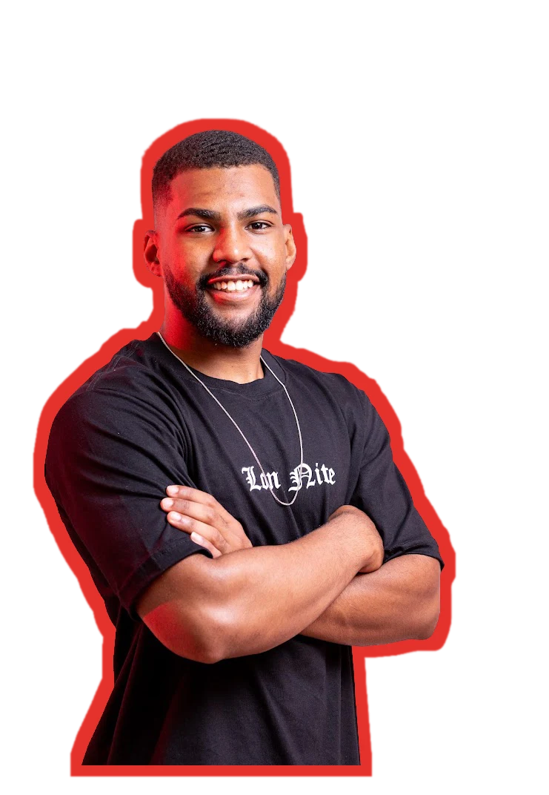

Designer gráfico e motion designer. Transformo ideias em animações que comunicam, envolvem e geram impacto.
Ver trabalhos
Portfólio 2026 · Brasil

Olá
Sou Joalyson, 22 anos. Designer gráfico e motion designer, criando desde os 16.
Comecei como finalista numa gráfica, onde aprendi composição e produção gráfica. Depois segui como freelancer em redes sociais, identidade visual e publicidade. No motion encontrei meu lugar: hoje transformo ideias em animação.
Trajetória
- Aos 16Designer finalista numa gráfica
- DepoisFreelancer: redes sociais, identidade visual e publicidade
- HojeMotion designer e designer gráfico
Ferramentas
- Ae
- Pr
- Ai
- Ps
- Fg
- C4
Faço
- Motion designvinhetas, reels, logos animados
- Design gráficoidentidade visual e peças para redes
- Audiovisualedição e conteúdos para campanhas

Trabalhos
Seis peças coladas no caderno: vinhetas, reels, pôster animado e logo. Passe o mouse para endireitar.
Serviços
- motion
- Motion para redesReels e Stories, até 30 segundos5 dias
- Logo animado5 a 10 segundos, com som1 semana
- Vinheta e abertura15 a 30 segundos2 semanas
- Vídeo explicativoroteiro e animação, até 90 segundos3–4 semanas
- design gráfico
- Identidade visuallogo, cores, tipografia e manual3 semanas
- Peças para redespacote mensal de posts e storiesmensal